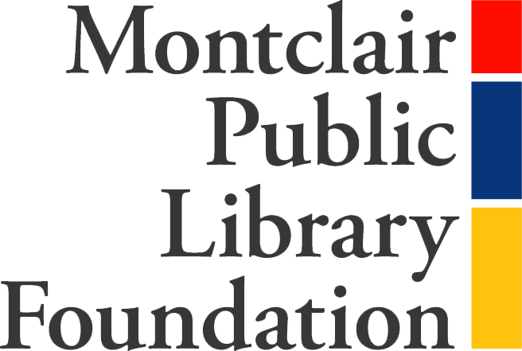
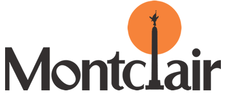
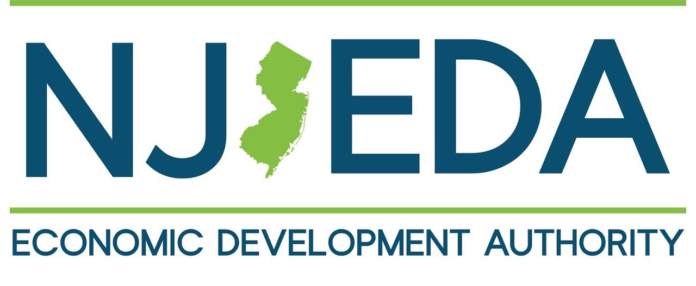

A $37 million State investment to revitalize Montclair's libraries.
Share Your Thoughts →A professional capital needs assessment found at least $14 million in deferred maintenance, aging infrastructure, and ADA accessibility gaps across both library buildings. These are not cosmetic issues. They affect safety, accessibility, and the library's ability to serve everyone who walks through the door.
The CAFE program allows Montclair to do far more than patch aging systems. It allows the community to reimagine what a public library can be, a place to learn new skills, make things, gather, and participate in the cultural life of the town.
The State of New Jersey is providing $37 million in tax credits to fund this project. Without this program, the full burden of these repairs and improvements would fall on Montclair residents. CAFE allows the Township to leverage State dollars so that local funds go further.
Every improvement is aimed at making the libraries more functional, more accessible, and more welcoming, for families, seniors, students, people with disabilities, and residents without access to technology at home.
The Cultural and Arts Facilities Expansion (CAFE) Program is run by the New Jersey Economic Development Authority (NJEDA). It uses transferable State tax credits to help communities make major investments in cultural and civic facilities, libraries, museums, performing arts centers, and similar public institutions.
Montclair applied through a competitive process and was awarded $37 million in tax credits. Those credits are tied directly to the approved library project and cannot be redirected to other municipal needs.

Here is how the funding works in plain terms: the library receives the tax credits after construction is complete. To fund construction in the meantime, the Township of Montclair issues bonds. Those bonds are repaid using the proceeds from selling the tax credits, which are distributed over five years after the project is finished.
For every roughly $1 the Township commits, Montclair gains about $4 in total project value: an approximately $37 million library for an estimated $8 million in local Township exposure.
Funding sources:
The Montclair Public Library Foundation is the philanthropic partner in this project. The Foundation is running a capital campaign to raise funds that complement the State tax credit award and the Township's financial contribution, with a goal of reducing the local tax burden as much as possible.
The Foundation has committed to raising a minimum of $2 million. That floor is part of the project's approved funding structure. But the campaign is designed to raise significantly more than that. In a project of this scale, unanticipated costs are a normal part of construction. Every additional dollar the Foundation raises is a dollar that does not have to come from the Township, and ultimately from taxpayers.
And beyond protecting the budget, philanthropic support shapes what this library can actually become. The spaces described in the CAFE application represent the floor of what is possible, the program the library is obligated and committed to deliver. Philanthropic dollars unlock everything above that floor. Better materials. More equipment. Richer finishes. Spaces that do not just function well but feel extraordinary. The difference between a good public library and a truly great one is almost always the level of community investment behind it.
Montclair is a crown jewel town. It is one of the most educated, culturally engaged, and civically active communities in New Jersey. Its residents read voraciously, support the arts, and use their library at rates that put most comparable communities to shame. In 2025 the library welcomed 200,000 visitors and circulated 400,000 items, and 45,000 people attended a program, class, or event at the library. This community has earned a library that matches its ambitions. A facility that is not just functional and modern, but genuinely beautiful, a public institution that residents feel proud to walk into, proud to bring their children to, and proud to show visitors.
That is what this project can be. The CAFE program makes it possible. Philanthropy makes it exceptional.
There is no ceiling on what the Foundation can raise. Every dollar above the minimum is an investment in a better outcome for every resident who walks through these doors.
Support the CampaignThe renovation covers both library buildings, the Main Library at 50 S. Fullerton Avenue and the Bellevue Avenue Branch at 185 Bellevue Avenue. The spaces described below are part of a vision for a modern library and cultural center: a library that reflects how people are changing the way they work, gather, learn, create, and connect. This vision imagines room for quiet study and lively collaboration, for hands-on making and cultural programming, for children, students, job seekers, artists, and lifelong learners alike. It is a starting point, not a finished blueprint. Community input and the design process ahead will shape how this vision becomes real.
The Main Library will undergo a full gut rehabilitation of all mechanical, electrical, and plumbing systems. Every floor will be rebuilt from the inside out. The building will be reorganized around new program spaces while retaining its collections and core library services.
The Bellevue Branch is a historic 1914 Carnegie library. The project adds 5,600 SF to the building, more than doubling its size, while restoring the historic structure and making it fully accessible for the first time.
The library is selecting an architect through a competitive process. Once selected, design development begins. Community engagement, permitting, and financing approvals all run in parallel during this phase.
Renovation work starts at both locations simultaneously. The Township will have confirmed bond financing in place before this phase begins.
The renovated Montclair Public Library and Cultural Center opens to the public.
Updates will be shared as each milestone is reached. Sign up below to stay informed.
The renovated libraries will be shaped by the community they serve. Share your thoughts, ideas, and questions using the form below, or take a few minutes to fill out our community survey.
Enter your email address to receive project updates directly.